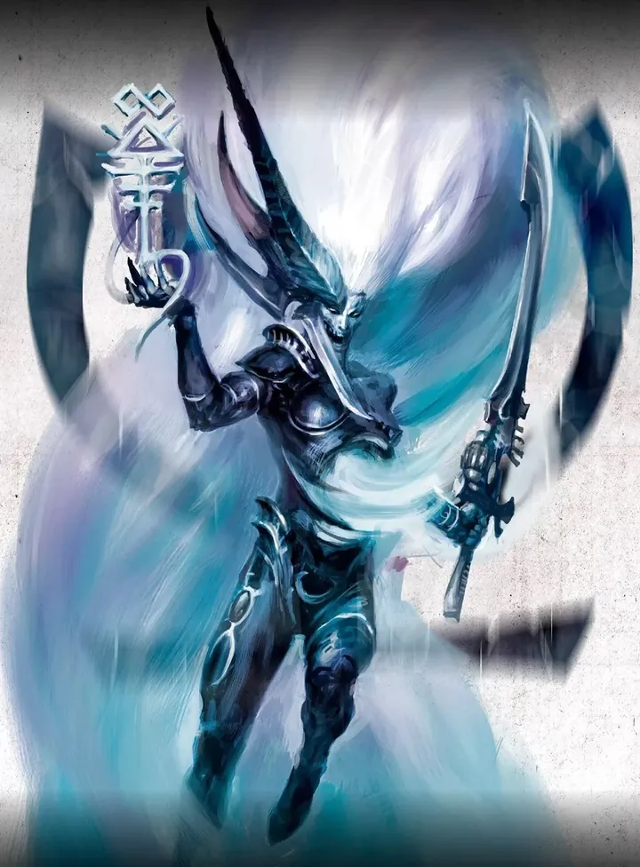
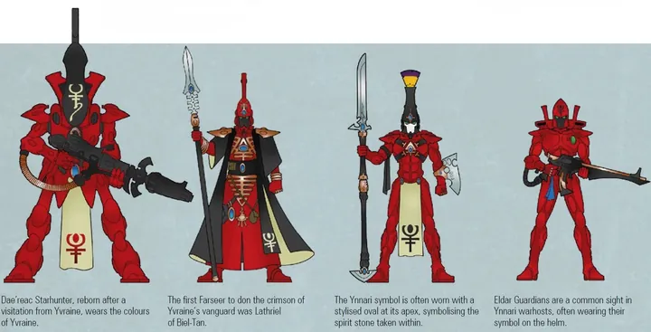
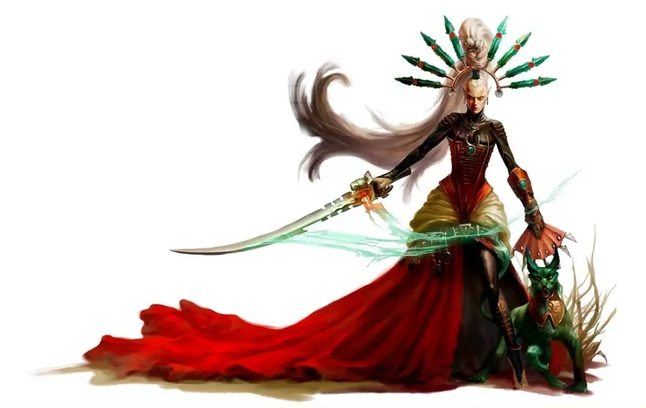
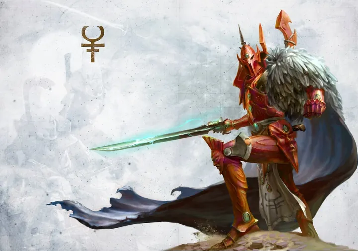
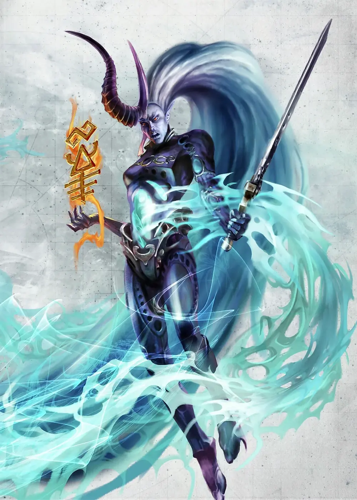

01ภาพรวม

ผู้ติดตามเทพแห่งความตายที่ยังไม่ตื่นเต็มที่ — ความหวังใหม่ของชาว Aeldari ที่จะเอาชนะ Slaanesh
02ต้นกำเนิด
ชาว Aeldari เชื่อว่าเมื่อวิญญาณชาว Aeldari ตายหมด Ynnead เทพแห่งความตายจะถือกำเนิดและทำลาย Slaanesh ได้ Yvraine อดีตนักสู้ในสนามประลองของ Commorragh ตายแล้วฟื้นคืนชีพโดยพลังของ Ynnead และประกาศว่าไม่ต้องรอให้เผ่าพันธุ์ตายหมด
03เนื้อเรื่องเจาะลึก
Rebirth of Yvraine
ในสนามกลาดิเอเตอร์ของ Commorragh Yvraine ถูกฆ่า แต่ฟื้นขึ้นพร้อมพลังของ Ynnead ขบวนการ Ynnari ถือกำเนิด และเดินทางไปทั่วกาแล็กซีรวบรวมผู้ศรัทธา รวมถึงเข้าร่วมการชุบชีวิต Guilliman เพราะเชื่อว่าจะช่วยแผนปลุก Ynnead
04ยุค 30K — ในยุค Great Crusade และ Horus Heresy
ยุค 30K ยังไม่มี Ynnari — มีเพียงความเชื่อเรื่องเทพ Ynnead ที่รอการถือกำเนิดในหมู่ชาว Aeldari บางกลุ่ม
ดูภาพรวมยุค 30K ทั้งหมดที่ เนื้อเรื่องยุค 30K และความต่างของสองยุคที่ เปรียบเทียบ 30K vs 40K
05นิสัยและวัฒนธรรม
- รวมคนจาก Craftworld, Drukhari และ Harlequins เข้าด้วยกัน
- ดูดพลังจากความตาย (Soulburst) ให้กลายเป็นพลังรบ
- ตามหา Croneswords — ดาบโบราณที่เชื่อว่าจะช่วยปลุก Ynnead
06จุดที่น่าสนใจ
- Triumvirate: Yvraine, Visarch (ผู้คุ้มกัน) และ Yncarne (อวตารของ Ynnead)
- ช่วย Belisarius Cawl ชุบชีวิต Roboute Guilliman
07ความสามารถพิเศษ
สิ่งที่ทำให้ Ynnari แตกต่างจากทัพอื่น — ทั้งพลังที่ติดตัวมาทั้งเผ่า/ทัพ และความสามารถของบุคคลสำคัญ
ของทั้งเผ่า/ทัพ

Strength from Death
เมื่อพันธมิตรหรือศัตรูตายใกล้ตัว Ynnari ได้รับพลังจากวิญญาณที่ไหลผ่าน ทำให้เคลื่อนไหว ยิง หรือต่อสู้เพิ่มได้ทันที

เก็บวิญญาณเพื่อเทพ
Ynnari เชื่อว่าวิญญาณ Aeldari ที่ตายควรถูกส่งไปให้ Ynnead เพื่อสะสมพลังจนเทพตื่น — ไม่ใช่เก็บในหินวิญญาณหรือให้ Slaanesh
รวมทุกกลุ่มของ Aeldari
ทั้งชาว Craftworld, Drukhari และ Harlequins รบร่วมกันใต้ธงเดียว สิ่งที่เคยเป็นไปไม่ได้มาหลายพันปี
ของบุคคลสำคัญ

Yvraine
Emissary of Ynneadอดีตนักสู้กลาดิเอเตอร์ของ Commorragh ที่ตายในสนามและฟื้นขึ้นมาในฐานะผู้เผยพระวจนะของ Ynnead ถือดาบ Cronesword และมีพลังเรียกวิญญาณผู้ตาย มีส่วนสำคัญในการปลุก Guilliman

The Visarch
ดาบของ Yvraineนักดาบองครักษ์ที่อุทิศชีวิตปกป้อง Yvraine ในทุกสมรภูมิ
The Yncarne
อวตารแห่งความตายร่างของเทพ Ynnead ที่ปรากฏขึ้นเมื่อมีชาว Aeldari ตายจำนวนมากในที่เดียว
08หน่วยและบทบาทในกองทัพ
Ynnari คือขบวนการใหม่ของ Aeldari ที่บูชา Ynnead เทพแห่งความตายที่ยังไม่ตื่นเต็มที่ รวมทั้งชาว Craftworld, Drukhari และ Harlequins ภายใต้ Yvraine
Yvraine
อีเวรนผู้เผยพระวจนะของ Ynnead ฟื้นจากความตายและนำขบวนการ
The Visarch
เดอะวิซาร์กองครักษ์ดาบของ Yvraine อดีต Autarch
The Yncarne
เดอะอินคาร์นอวตารของ Ynnead ปรากฏเมื่อ Aeldari ตายจำนวนมาก
Soulbound
ผู้ผูกวิญญาณAeldari ที่เข้าร่วม Ynnari เชื่อว่าการตายจะปลุกเทพ และใช้พลังจากความตายของพี่น้อง
09วีรกรรมและเหตุการณ์สำคัญ
การฟื้นคืนชีพของ Yvraine
กลางสนามประลองใน Commorragh
ชุบชีวิต Guilliman
ร่วมกับ Cawl ปลุก Primarch แห่ง Ultramarines
10ตัวละครสำคัญ
Yvraine, Visarch และ Yncarne
Triumvirate แห่ง Ynneadผู้นำของ Ynnari
11ยุค 40K — สหัสวรรษที่ 41
Ynnari เพิ่งเกิดขึ้นช่วงปลาย M41 — ก่อนหน้านั้นเป็นเพียงความเชื่อของคนส่วนน้อย
12เนื้อเรื่องล่าสุด (Era Indomitus / M42)
Ynnari เดินทางไปทั่วกาแล็กซีเพื่อรวบรวม Croneswords และชักชวนชาว Aeldari ให้เข้าร่วม ขณะที่ Craftworld หลายแห่งยังมองว่าพวกเขาเป็นภัย
หลังการเกิด Great Rift ปฏิทินของจักรวรรดิคลาดเคลื่อน เหตุการณ์ยุคปัจจุบันจึงมักระบุเพียง 'M42' ไม่มีปีที่แน่นอน
13แกลเลอรี
